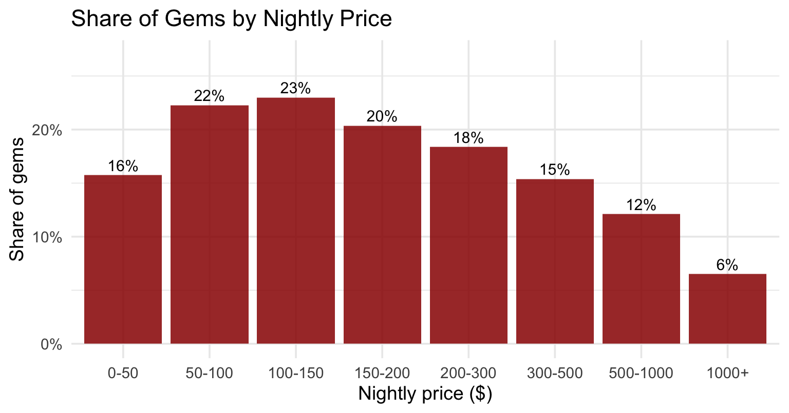
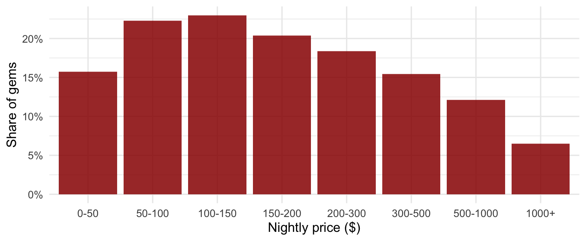
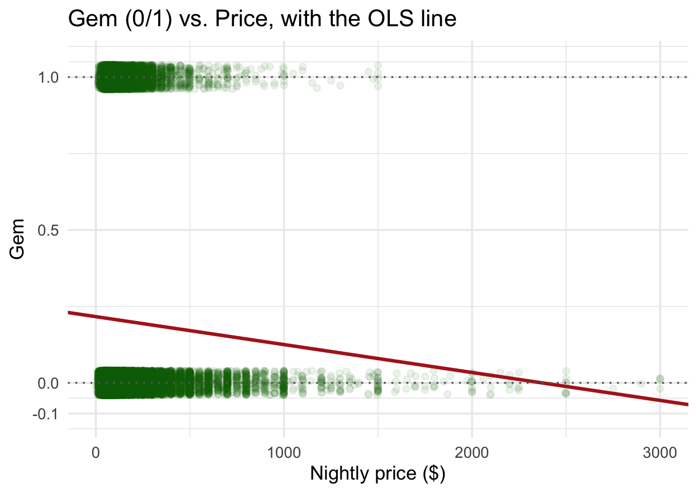
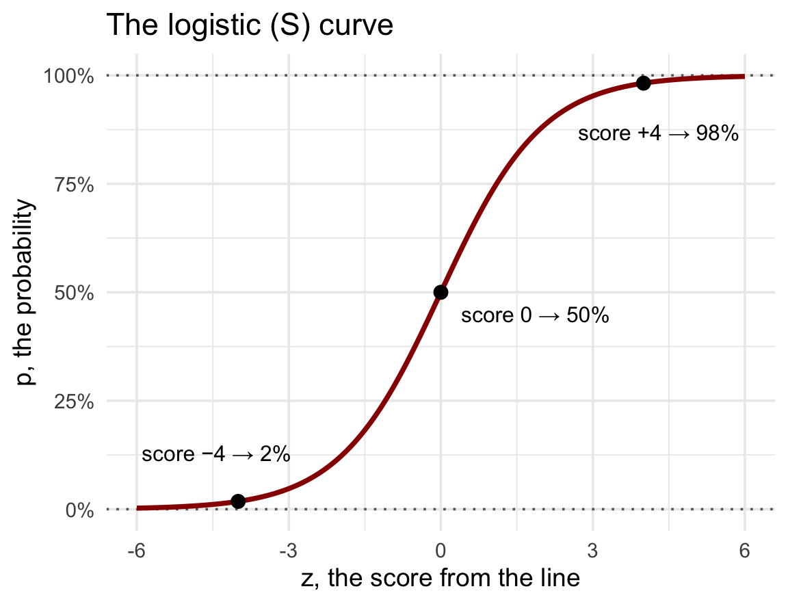
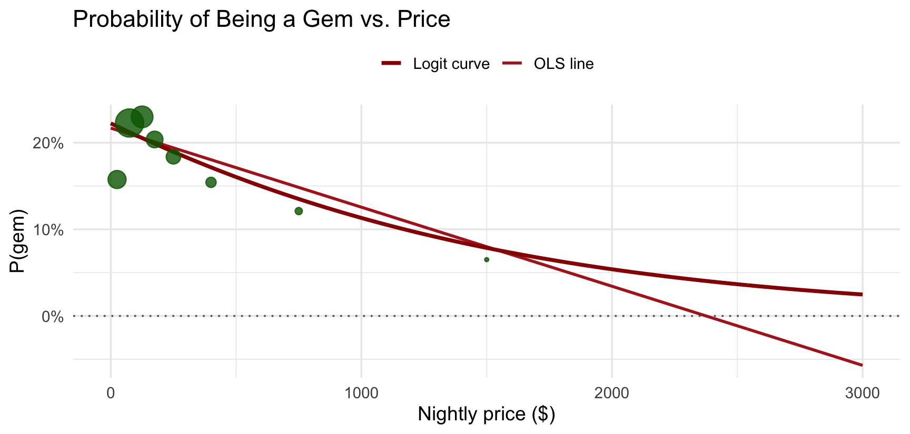

0 1
40460 10358 [1] 0.2038254MKT 566 · Fall 2026
USC Marshall School of Business
Thursday’s regressions predicted a number: sales, price. Many marketing questions are yes or no:
Today you learn to
glm() and put it in a stargazer tableWhat stays the same
In the code/ folder on the course website, next to Thursday’s:
w4-2-logit-class.R: every chart and model in today’s deckdata/airbnb.csv: the same Airbnb listingsw4-code.zip has all of week 4: Thursday’s two scripts, today’s, and the data. If you downloaded it on Thursday, you already have everything.
An investor wants listings that are both well rated and actually booked. Define a gem as a listing with a rating of 4.5 or more and more than 20 reviews:
0 1
40460 10358 [1] 0.2038254gem is a dummy: 1 for a gem, 0 otherwise. About 20% of listings are gemsThe & means both conditions must hold; as.integer() turns TRUE/FALSE into 1/0, as in Task 7 of the case.

Same idea as the “average by group” charts of week 3, with a 0/1 variable: the average of a dummy is a share. What do you see?


[1] 22[1] -0.7For a yes/no outcome we need a curve that is linear in the middle and flattens at both ends. That curve is the logistic function, and the model built on it is the logit (logistic regression).
Two steps, and only the second one is new:

The odds are the chance it happens, divided by the chance it does not. Sports betting already speaks this language:
| Probability | Odds \(= p / (1 - p)\) | In words |
|---|---|---|
| \(p = 20\%\) (the chance a random listing is a gem) | \(0.2 / 0.8 = 0.25\) | one to four: 1 gem for every 4 non-gems |
| \(p = 50\%\) | \(0.5 / 0.5 = 1\) | even: as likely as not |
| \(p = 80\%\) | \(0.8 / 0.2 = 4\) | four to one: 4 gems for every non-gem |
A logit coefficient \(\beta_1\) is the change in the log-odds for one more unit of \(X\). Nobody thinks in log-odds, so the next slide converts.
The rule: one more unit of \(X\) multiplies the odds by \(e^{\beta_1}\); R computes it for you (exp(coef(m))). The worked example previews the model we run next, a logit of gem on price: its coefficient will come out at \(\beta_1 = -0.0008\) per dollar. Your job is three steps:
| Step | Price example: \(\beta_1 = -0.0008\) per dollar |
|---|---|
| 1. Sign and stars, as in OLS | negative, significant: pricier listings are less likely to be gems |
| 2. Scale: multiply \(\beta_1\) by the change you care about | for $100 more: \(100 \times -0.0008 = -0.08\) |
| 3. Convert: odds are multiplied by \(e^{\beta_1}\); the percent change is \(e^{\beta_1} - 1\) | \(e^{-0.08} = 0.923\): $100 more multiplies the odds by 0.923, and \(0.923 - 1 = -0.077\): a 7.7% drop in the odds |
exp()The percent change is in the odds, not in the probability. To turn odds back into a probability: \(p = \text{odds} \,/\, (1 + \text{odds})\). So a 50% increase in odds takes a probability of 20% to 27%, not to 30%: odds of \(0.25\) grow to \(0.375\), and \(p = 0.375 / 1.375 = 27\%\).

Green dots: the observed share of gems in each price bin (sized by number of listings). Which model fits the dots, and what happens past $2,000?
| Dependent variable: | |
| Gem (0/1) | |
| Price | -0.0008*** |
| (0.0001) | |
| Constant | -1.2520*** |
| (0.0163) | |
| Observations | 50,818 |
| Log Likelihood | -25,650 |
stargazer call as ThursdayOdds are for reading the table. What a manager wants is the predicted probability: the chance that a listing at a given price is a gem. predict(lg1, type = "response") computes it (the score, squashed) for any price you name: a $50 listing has a 21.5% chance, a $200 one 19.6%, $500 16%, $1,000 11%, $5,000 0.5%. That is the blue curve on the previous slide, read off point by point.
Estimation. OLS picks the line with the smallest squared errors. Logit picks the coefficients that make the observed 0s and 1s most likely (maximum likelihood). R does it in a fraction of a second; you never need the formula.
Log-likelihood. How likely the data is under the model. Always negative; closer to zero is better. Use it to compare models on the same data, the way you used R² on Thursday.
There is no R². Alternatives:
For the price-only model: log-likelihood −25,650 vs. −25,697 without price; pseudo-R² 0.002. Price matters, and explains very little, the same lesson as Thursday.
glm()glm() works like lm(), with family = binomial to ask for a logit:
| Dependent variable: | |
| Gem (0/1) | |
| Price | -0.0017*** |
| (0.0001) | |
| Guests included | 0.1119*** |
| (0.0079) | |
| Boston | 0.1674*** |
| (0.0405) | |
| Los Angeles | 0.1617*** |
| (0.0293) | |
| Miami | -0.1955*** |
| (0.0416) | |
| Private room | -0.0072 |
| (0.0265) | |
| Shared room | -0.7068*** |
| (0.0642) | |
| Constant | -1.3935*** |
| (0.0349) | |
| Observations | 50,818 |
| Log Likelihood | -25,420 |
Same table, typeset for the slide; in your terminal it prints as text. Standard errors in parentheses under each coefficient; stars: *p < 0.1, **p < 0.05, ***p < 0.01. Read the signs, then the sizes. Which predictor has the largest effect?
| Coefficient | Odds multiply by | Reading (holding the others fixed) |
|---|---|---|
| Price \(-0.0017\) | \(e^{-0.17} = 0.84\) per $100 | $100 more: odds of being a gem 16% lower |
| Guests included \(0.11\) | \(1.12\) per guest | one more guest included: odds 12% higher |
| Boston \(0.17\), Los Angeles \(0.16\) | \(1.18\), \(1.18\) | vs. Austin: odds about 18% higher |
| Miami \(-0.20\) | \(0.82\) | vs. Austin: odds 18% lower |
| Private room \(-0.01\), not significant | \(0.99\) | same odds as an entire home |
| Shared room \(-0.71\) | \(0.49\) | odds halved vs. an entire home |
Odds ratios compare. Probabilities decide. predict() with type = "response" gives the probability for any listing you describe:
price guests_included city room_type p_gem
1 100 2 Austin Entire home 0.208
2 100 2 Boston Entire home 0.236
3 300 2 Austin Entire home 0.157
4 100 2 Austin Shared room 0.114Odds ratios for a table, probabilities for a decision. Always compute a few predicted probabilities for realistic cases before you write a recommendation.
| OLS (Thursday) | Logit (today) | |
|---|---|---|
| Outcome | a number (price, sales) | yes/no (gem, buy, churn, click) |
| Model | \(Y = \beta_0 + \beta_1 X\) | \(\log\frac{p}{1-p} = \beta_0 + \beta_1 X\) |
| R | lm(y ~ x) |
glm(y ~ x, family = binomial) |
| \(\beta_1\) means | one more unit of \(X\) → \(\beta_1\) more units of \(Y\) | one more unit of \(X\) → odds \(\times\, e^{\beta_1}\) |
| Predictions | predict(m) |
predict(m, type = "response") gives probabilities |
| Fit | R², residual standard error | log-likelihood, pseudo-R² |
| Estimation | least squares | maximum likelihood |
| Same in both | predictors, logs of \(X\), dummies and base levels, SE, stars, “holding the others fixed”, not causation |
Cheaper listings are more likely to be gems. Three stories, as always:
“A $100 higher price is associated with 16% lower odds of being a gem.” The model holds fixed guests, city, and room type. It does not hold fixed listing age, photos, or host effort.
The handout (w4-airbnb-case.html) works like RateBeer, with less help: an exact prompt for Task 1, skeletons for Tasks 2–3, and only the goal from Task 4 on.
The client is an investor deciding where to buy and what to list:
Under every task: predict before you run, explain back one line after.
Aim to finish Task 5 in class. Deliverable, same as always: an R Markdown report knitted to HTML plus ai-log.md, due Sunday, Sept. 27, 11:59 pm. Data: airbnb-case-data.zip.
Code and data to reproduce today’s models, on the course website:
w4-code.zip: both week 4 scripts and the dataw4-2-logit-class.R: every chart and model shown todayRequired reading: Chapter 3.6 of R for Marketing Students. Optional: Chapter 9.2 of R for Marketing Research and Analytics.
MKT 566 · Marketing Analytics